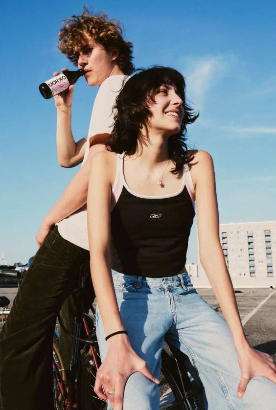

Work
Brand and consumer marketing lead. I turn what people really care about into brands they come back to.

01 · Brand building · Barcelona
NaturaleBio
From top Amazon seller to a brand people come back to, built around small everyday rituals.

02 · Brand launch · Hamburg
MOR'KO Kombucha
A kombucha for the bar, not the health shelf.

03 · Rejuvenation strategy · Germany
Lucky Strike
Making an iconic, dormant brand matter again to people under 30.
What I do
Brand strategy
- Market research and brand audit
- Audience insights
- Brand story and key message
- Positioning
- Brand character and tone of voice
- Campaign development
Brand identity
- Naming, taglines and motto
- Tone of voice and communication matrix
- Visual identity: logo, colour, type
- Brand communication templates
- Brandbook
Creative direction
- Concept development
- Art direction
- Content direction
- Cross-platform consistency
- Production supervision